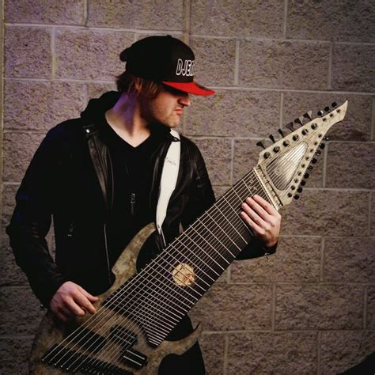

“You can't fake a passion for luthiery, a love for music, or a commitment to excellence… so we don't!”
- Dude Bruh

“This is a very complex (31 frets per octave) instrument with 4 pickups across 2 discrete 1/4 inch outs as well as a 13 pin guitar synth output. The combinations are endless. The staff at Bahzinga did a great job at stepping up to meet a very challenging request. I love this guitar and can hardly put it down.”
“The heavy guitar tones we got with the Halo were absolutely crushing. IT'S SO GOOD. These guitars are not just great on stage, they're AMAZING in the studio!”